Abstract
High-quality animated stickers usually contain transparent channels, which are often ignored by current video generation models. To generate fine-grained animated transparency channels, existing methods can be roughly divided into video matting algorithms and diffusion-based algorithms. The methods based on video matting have poor performance in dealing with semi-open areas in stickers, while diffusion-based methods are often used to model a single image, which will lead to local flicker when modeling animated stickers. In this paper, we firstly propose an ILDiff method to generate animated transparent channels through implicit layout distillation, which solves the problems of semi-open area collapse and no consideration of temporal information in existing methods. Secondly, we create the Transparent Animated Sticker Dataset (TASD), which contains 0.32M high-quality samples with transparent channel, to provide data support for related fields. Extensive experiments demonstrate that ILDiff can produce finer and smoother transparent channels compared to other methods such as Matting Anything and Layer Diffusion.
Method
Exemplary results of animated sticker generation using our proposed approach, RDTF. Our method performs well on different generation tasks: (top) Text&image to GIF, (middle) Prediction, (down) Interpolation. Gray boxes indicate text or visual guidance.
TASD Dataset
| Trigger Word | Description | GIF | Trigger Word | Description | GIF |
unhappy |
In the picture, a cute little brown owl is sitting on the ground with its eyes closed, giving people a drowsy feeling. There is a can of Coca-Cola next to the owl. | hit you |
The main character is a small green frog with a crown on its head, looking angry or grumpy. The frog is placed in the center of the picture, wearing a blue vest. | ||
wow |
A cat is drawn simply with large eyes. The cat is sitting and looking up with a surprised or curious expression on his face, as if he has seen something unexpected or intriguing. The cat's appearance and expression bring a playful and cute quality to this image. | shy |
A cute pink and white pig with a big mouth stands in the center of the picture. The pig looks like it is smiling or expressing happiness because it has a big eye and round face appearance. | ||
good night |
The main character is a small cartoon character wearing a white coat and glasses, who looks like a doctor or an alien. The character is depicted lying on a bed covered with a blanket, giving a feeling of comfort and warmth. | hi |
A large green lizard-like creature is shown sitting on the floor, absorbed in a book. The lizard appears to be enjoying the book, showing curiosity and a hint of excitement as it reads. This whimsical creature presents a unique and interesting perspective on the joy of reading. |
Compare to Other Methods
| Src Img | MattingAnything[1] | SAM[2] | SAM2[3] | LayerDiffusion[4] | Ours | |
| Case1 RGB | 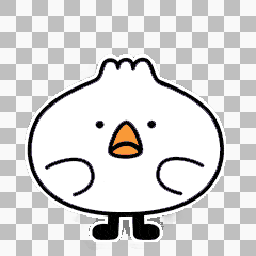 | 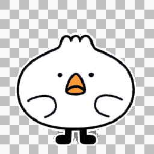 | 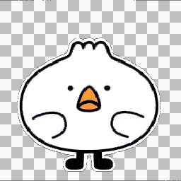 | 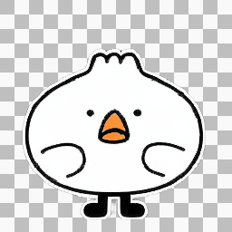 | ||
| Case1 Alpha | 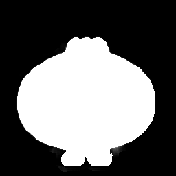 | 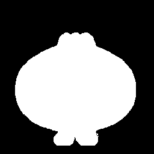 | 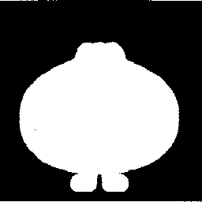 | 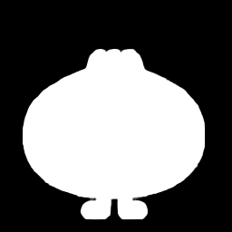 | ||
| Case2 RGB | 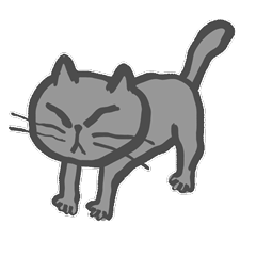 | 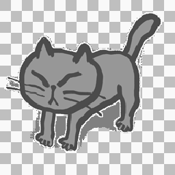 | 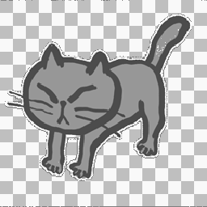 | 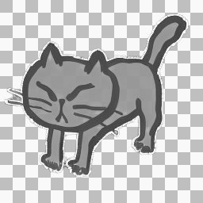 |  |
|
| Case2 Alpha | 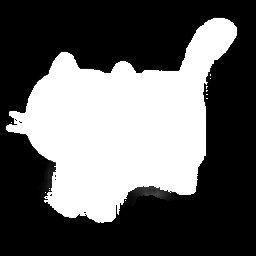 | 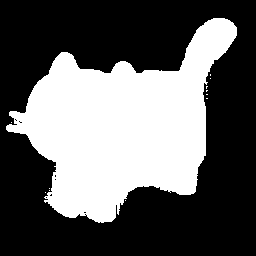 | 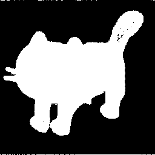 | 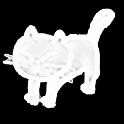 | ||
| Case3 RGB | 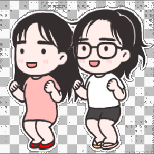 | |||||
| Case3 Alpha | 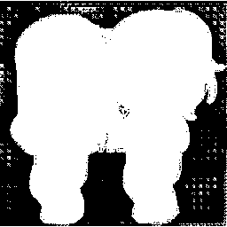 | 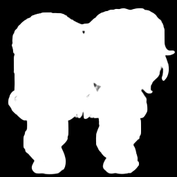 | ||||
| Case4 RGB | 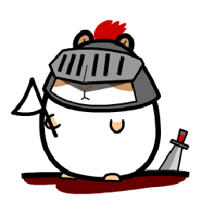 | 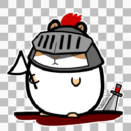 | 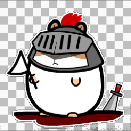 | |||
| Case4 Alpha | 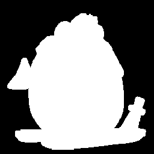 | 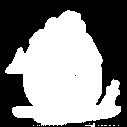 | 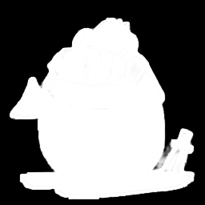 |
More Results
| Input GIF | Output GIF | Input GIF | Output GIF | Input GIF | Output GIF |
| 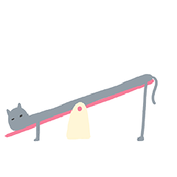 | 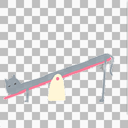 | 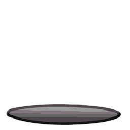 | 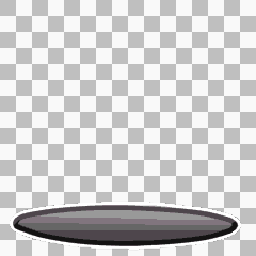 | ||
| 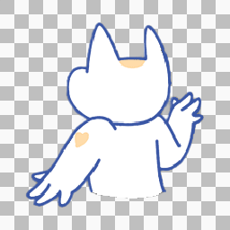 | 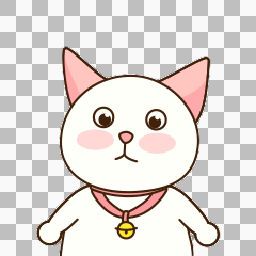 | ||||
| 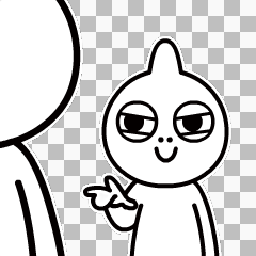 | 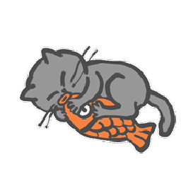 | 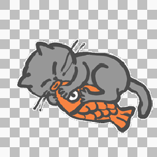 |
BibTeX
If you use our work in your research, please cite:
@inproceedings{zhang2025ildiff,
title={ILDiff: Generate Transparent Animated Stickers by Implicit Layout Distillation},
author={Zhang, Ting and Yuan, Zhiqiang and Zhu, Yeshuang and Zhou, Jie and Zhang, Jinchao},
booktitle={ICASSP 2025-2025 IEEE International Conference on Acoustics, Speech and Signal Processing (ICASSP)},
pages={1--5},
year={2025},
organization={IEEE}
}